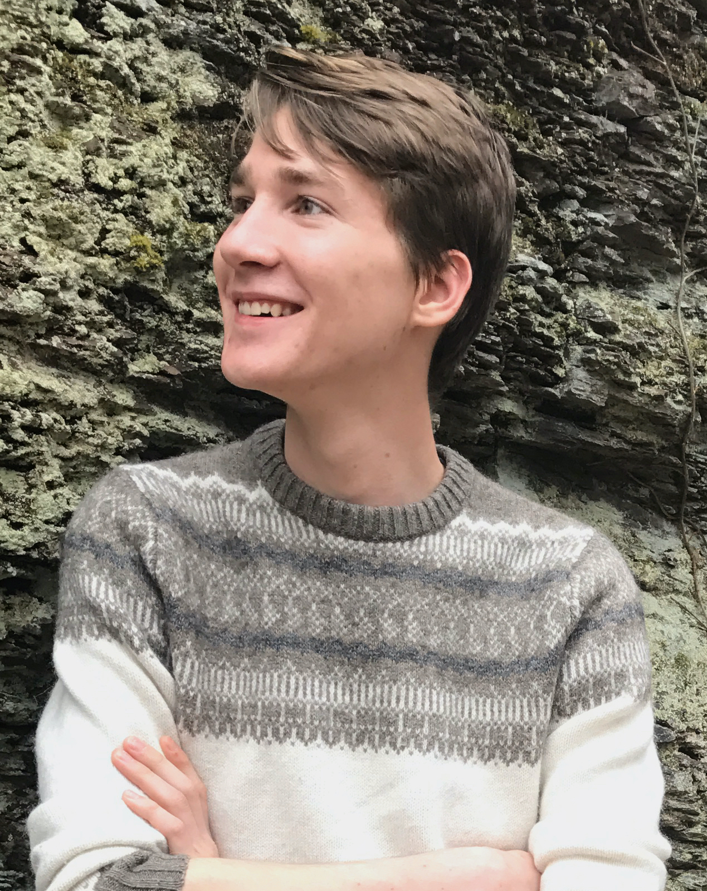

About me
I’m an aspiring linguist and a recent graduate from Rutgers University with a B.A. in linguistics. I work primarily in syntax and semantics, with broad-ranging interests aimed at understanding the cognitive representations of linguistic knowledge and linguistic processes.
I’ve done work with Viviane Déprez exploring topics in French linguistics like the pragmatics of wh-movement and the prosody of sentences with multiple negations. In the summer of 2019, as a CSLI intern at Stanford University, I had the wonderful opportunity to work with Sebastian Schuster and Judith Degen on a project exploring the learning processes underlying semantic adaptation.
Going forward, I’m interested in exploring ways to use computational tools to model syntax, finding new ways to form and test hypotheses about the underlying nature of our grammatical knowledge.
In my free time…
This past year, I’ve started learning to knit, and I’m absolutely loving it. I also spend copious amounts of time reading anything I can get my hands on (and not just about linguistics). Sometimes, I write. Maybe I’ll get around to sharing some of it here one of these days.